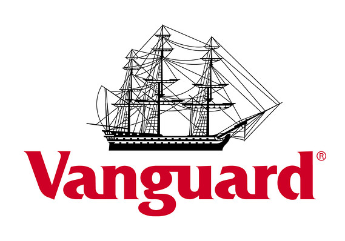

VOO tracks a market-cap-weighted index of US large- and midcap stocks selected by the S&P Committee.
VOO captures the large-cap space well. The fund tracks its index extremely well. However, like all S&P 500 funds, it defines large-caps as the S&P Committee sees it, which means it includes a fairly large allocation to firms that we consider to be midcaps. Still, VOO offers excellent US large-cap coverage. The fund competes in a crowded space. VOO stumbles slightly on transparency: it discloses holdings monthly with a lag, not daily like its peers. However, it is able to reinvest dividends when paid. The ETF is technically part of a larger Vanguard portfolio that includes S&P 500 mutual fund share classes, an arrangement with little to no practical impact on VOO investors. In all, VOO delivers the goods across the board.